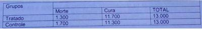
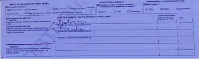
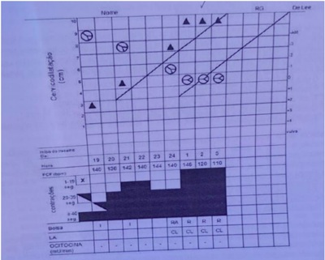
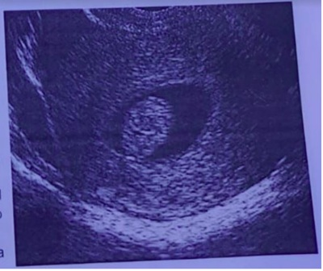
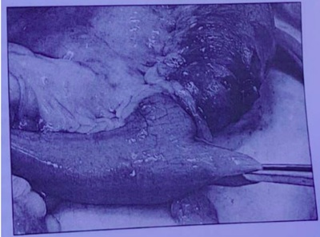
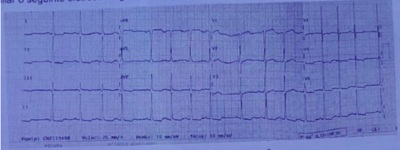
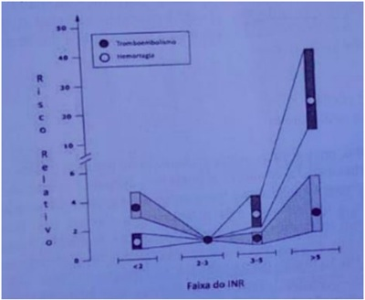
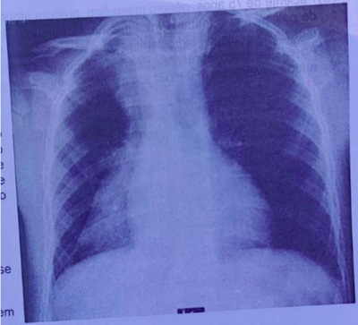
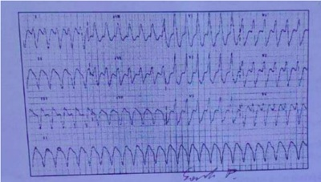
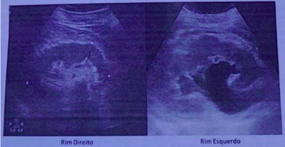

Um trabalhador da Área da Saúde (Enfermeiro) teve sua jornada de trabalho expirada as 18h, quando adentrou em sua motocicleta e se dirigindo para sua residência, lembrou-se de realizar as compras do mês em um supermercado que estava inserido no trajeto, tendo um gasto de aproximadamente 90 minutos para realizá-las, quando então dá início ao retorno para sua residência sofre um acidente projetando-se para o solo e apresentando diversas fraturas de membros superiores, pergunto:
O primeiro Câncer relacionado ao Trabalho descrito pelo Médico inglês Percival Pott, em 1975, em trabalhadores que realizavam limpeza de chaminés na Inglaterra, foi o:
São exames complementares obrigatórios a serem realizados em trabalhadores que laborem em empresas de processamento de alimentos, e deverão constar no PCMSO das mesmas:
Na ocorrência de Acidente do Trabalho em uma Indústria Metalúrgica teve como consequência óbito do trabalhador: Quais são os procedimentos Legais corretos a serem adotados:
Um trabalhador de 35 anos de idade do setor moveleiro, é acometido de Acidente do Trabalho "gravíssimo", que teve como consequência amputação da mão esquerda e resolveu protocolar uma Ação Indenizatória contra a citada empresa. O Juiz do Trabalho deverá nomear um Perito Médico para avaliar o grau de incapacidade laborativa do empregado acidentado. A Legislação Trabalhista aceita o que segue:
A composição da CIPA (Comissão Interna de Prevenção de Acidentes de Trabalho) avalia a responsabilidade do Acidente de Trabalho, é correto afirmar que:
Paciente feminina, 55 anos, chega à Unidade Básica de Saúde do seu bairro, para retorno com a Dra. Gabriela. Na primeira consulta referiu desânimo, sem forças para realizar as atividades de casa e com fogacho ("tenho vontade de car sem roupa"). Referia também insônia e preocupações com o lho. Após estar cumprindo projeto terapêutico, em comum acordo com a Dra. Carla, a consulta de retorno se desenvolve com o seguinte diálogo: - Dra. Gabriela: - Entre e sente-se, dona Maria, em que posso ajuda-la hoje? - Dona Maria: - Bem, vim para falar que melhorei bastante da fraqueza e do desânimo, o calor no corpo diminui e estou dormindo melhor, depois que a doutora me orientou e passou aqueles remedinhos. Como a doutora falou, acho que logo não precisarei mais do remédio para dormir. Estou bem mais calma. - Dra. Gabriela: - Que bom! Fico muito feliz que as coisas estão melhorando dona Maria. Mantenha por enquanto as orientações que combinamos. Hoje, vou aproveitar a vinda da senhora para pedir alguns exames preventivos. Faz quanto tempo que a senhora não faz uma mamogra a? - Dona Maria: - Eu nunca z doutora. - Dra. Gabriela: - Depois de examiná- la, vou fazer o pedido então e de mais alguns outros exames importantes para sua idade. Ao ler esta história ctícia, qual o princípio do SUS e da RAS (Rede de Atenção à Saúde) que foi levado em conta pela Dra. Gabriela nesta consulta na Atenção Básica?
Os serviços e os pro ssionais de saúde vêm sendo cada vez mais pressionados pelo complexo médico-industrial (indústrias de medicamentos, exames, órteses e próteses), onde o conhecimento cientí co é transferido do cuidado centrado na pessoa para avaliação e gestão de riscos. Praticamente todos os seres humanos, na maioria das vezes, são taxados de doentes quando procuram atendimento médico. Um dos principais argumentos daqueles que propagam práticas de medicalização da vida é a importância crescente atribuída ao risco, e a confusão que se faz entre risco e doença no dia a dia da prática médica. Baseado nestas a rmações, responda: Qual o nível de prevenção que está em jogo nesta constatação?
Revisar: possível letra faltando em enunciado
Dona da Amil, UnitedHealth se prepara para vender toda operação no Brasil: "Segundo fontes, Rede D'Or, maior rede de hospitais privados do país, seria o maior interessado nos ativos. Os ativos envolvem 15 hospitais e 53 centros ambulatórias da AMIL e 16 hospitais, 41 clínicas médicas, distribuídos em seis estados brasileiros, com uma estrutura de 2.332 leitos e mais de 17 mil pro ssionais". O setor da Saúde Suplementar, que possui 48 milhões de consumidores e fatura, aproximadamente, 210 bilhões de reais, em que pese a crise econômica brasileira, está em franco aquecimento e movimentação. Agência O Globo (14/01/2022) Baseado na reportagem acima, responda: Quais as tendências do mercado da saúde suplementar apontadas pelas reportagens?
Paciente feminina, 25 anos, 20 semanas de gestação, deu entrada no HCM, com quadro de hemorragia vaginal, em pré choque. Relata a acompanhante que o sangramento tinha começado há aproximadamente um dia. Foi diagnosticado deslocamento prematuro de placenta. Em que pese todas as medidas tomadas a gestante veio a falecer, após apresentar parada cardiorrespiratória, sem sucesso na reanimação. A criança nasceu morta pesando 500 gramas e medindo 25 centímetros. Como deveria ser preenchido a declaração de óbito da mãe e qual a conduta ética e legal em relação ao óbito fetal.
Foi realizado um Estudo de Intervenção, com o objetivo de se verificar o efeito da Trombólise IV em paciente com supra desnivelamento de ST ou Bloqueio de Ramo e Delta. Tempo de até seis horas do início de sintomas do Infarto Agudo do Miocárdio. Os dados do estudo estão na Tabela abaixo. Os números foram arredondados para facilitar o cálculo. Grupos; Tratado; Controle. Morte; 1.300; 1.700. Cura; 11.770; 11.300. Total; 13.000; 13.000. Baseado na Tabela, calcule a Estimativa do Tamanho do Efeito do Tratamento (Número necessário de pacientes necessários para que o tratamento tenha um efeito positivo).

Paciente masculino, pintor e trabalha em uma metalúrgica onde opera instrumento de pintura a revolver. Segundo o PPRA da empresa, neste setor os trabalhadores estão expostos ao chumbo inorgânico, ruído acima de 85 dB, tolueno e metil-etil- cetona. Como médico do trabalho da empresa, quais exames complementares você solicitaria no exame periódico deste trabalhador, de acordo com o Quadro I da NR-7?
Em uma reunião com 200 participantes, no Hotel "Come-se Bem e à Vontade", promovida pela Secretaria de Saúde para um curso de atualização em Tuberculose; levou-se inicialmente 50 pro ssionais para uma UNIDADE DE SAÚDE próxima, com quadro de náuseas, vômitos, diarreia e cólicas abdominais. A investigação de surto identi cou um total de 120 casos, envolvendo o consumo de sanduíche de presunto e queijo, oferecido durante o lanche vespertino do segundo dia da reunião e confirmou sua etiologia estafilocócica. Qual a Taxa de Ataque Inicial e final do surto, respectivamente.
Menino, 6 anos, foi ''picado por um bicho'', não soube qual. Seus pais caram apavorados, pois outras crianças foram picadas por escorpião ali no bairro e uma das crianças com 5 anos morreu. Levaram o lho assintomático para a UPA. O paciente passou pelo acolhimento e classificação de risco com uma enfermeira, sendo classificado em azul (prioridade 3 - consultas de baixa complexidade - atendimento de acordo com o horário de chegada) podendo ser o atendimento até em 1 hora. Após 50 min, a criança referiu dor forte no local da picada, muita sudorese e os pais observaram vermelhidão e inchaço no local. Esta evolução reforçou a possibilidade de um acidente por picada de escorpião, e assim chamaram a enfermeira. A enfermeira avaliou imediatamente, sendo que o paciente foi reclassi cado em vermelho (prioridade zero - emergência, necessidade de atendimento imediato), pois pode ter evolução muito grave e óbito. Foi encaminhado urgente para a Emergência do HE (Hospital de Ensino) que é referência para a aplicação de soro antiescorpiônico. Em relação a este caso pode-se afirmar que:
Revisar: possível letra faltando em enunciado
Em setembro de 2021, a Organização Mundial da Saúde (OMS) estabeleceu uma meta global ambiciosa. A agência de saúde da ONU pediu que 70% da população global fosse vacinada até meados de 2022. Aquela altura, pouco mais de 3% das pessoas em países de baixa renda havia sido vacinadas com pelo menos uma dose, em comparação com 60-18% em países de alta renda. Seis meses depois, o mundo está longe de atingir essa meta. O número total de vacinas administradas aumentou drasticamente, mas também a desigualdade da distribuição: das 10,7 bilhões de doses distribuídas em todo o mundo, apenas 1% foi administrada em países de baixa renda. Isso significa que 2,8 bilhões de pessoas em todo o mundo ainda estão esperando por sua primeira dose. A desigualdade nas vacinas põe em risco a segurança de todos e contribui para aumentar as desigualdades entre - e dentro - dos países. Esse estado de coisas não apenas corre risco de prolongar a pandemia, mas esta desigualdade, tem muitos outros impactos, retardando a recuperação econômica de países inteiros, mercados de trabalho globais, pagamentos da dívida pública e capacidade dos países de investir em outras prioridades (Nações Unidas, março 2022). Dentre os princípios do Sistema de Saúde brasileiro, relacionados abaixo, qual deles visa atenuar as desigualdades e injustiças sociais:
Na reorganização do Sistema Único de Saúde (SUS) o Ministério da Saúde pela Portaria nº 4.279, de 30 de dezembro de 2010 estabelece diretrizes para a organização da Rede de Atenção à Saúde no âmbito do SUS. O conceito de Rede de Atenção à Saúde - RAS é:
Médico, 25 anos, está na 1ª semana de atividade da residência de cirurgia em um Hospital de Ensino (HE), referência regional para atendimentos secundários e terciários. O residente acidenta-se, ao fazer um procedimento, com material perfuro cortante contaminado com sangue do paciente que está sob os cuidados da equipe cirúrgica, na qual ele está passando. Este paciente com AG HBS positivo faz tratamento para Hepatite B no HE. O residente ainda não foi vacinado contra Hepatite B, embora esteja agendado na sala de vacina para atualizar a sua situação vacinal. Conforme recomendação do Ministério da Saúde, para acidentes ocupacionais com material perfuro contaminados, além do atendimento na emergência para o ferimento, qual a conduta na emergência do Hospital em relação a prevenção da Hepatite B?
Homem de 21 anos, procura atendimento na Emergência do HE com história de há 3 dias apresentar febre, mialgia, fadiga, cefaleia, astenia, dor nas costas, linfadenopatia e lesões no abdome inicialmente puntiforme avermelhada que evoluiu para vesículas. Relata que teve contato sexual com o seu companheiro há 10 dias, sendo que este apresentava quadro e lesões semelhantes. Na investigação do paciente foram solicitados exames para monkeypox (MPX), varicela, herpes zoster, sarampo, zika, dengue, chikungunya, herpes simples, infecção gonocócica disseminada, sí lis primária ou secundária, cancroide, linfogranuloma venéreo e granuloma inguinal. O caso suspeito de MPX é uma das doenças de noti cação compulsória, em todo território nacional, conforme Portaria GM/MS n° 3.418, de 31 de agosto de 2022. Das alternativas abaixo qual é a correta em relação a suspeita de MPX?
Homem, 20 anos, em união estável há 12 meses com mulher com 18 anos. Paciente em atendimento na UBS relata que estava assintomático. Foi convocado para ir a UBS, pois a sua companheira está pretendendo engravidar e foi identi cado que entre os exames solicitados para ela a sorologia para sí lis (VDRL) é positiva. Informa que está sendo tratada para sí lis e foi noti cada. Ele refere que, antes de conhecer a companheira atual, teve múltiplas parceiras sexuais. Foi solicitado que ele fizesse todos os exames. Embora assintomático a sorologia para sífilis (VDRL) dele é positiva. Qual a conduta?
Revisar: possível letra faltando em enunciado
Adolescente feminina, 16 anos, saudável, estudante de ensino médio, procura atendimento na Unidade Básica de Saúde, sem acompanhante. Refere que já iniciou a vida sexual e gostaria de fazer uso da pílula anticoncepcional, apesar de utilizar preservativo. O médico que atende diz que só pode prescrever o método pedido após falar com um de seus pais ou responsável legal. Em relação a conduta do médico aponte a alternativa correta:
Revisar: possível letra faltando em alt B
Homem 54 anos, lavrador, residente na área de abrangência Unidade Básica de Saúde a (UBS) com Estratégia de Medicina Família do município X, apresenta perda de peso acentuada nos últimos três meses. Teve diagnostico de câncer de estomago, no inicio do quadro, e foi submetido à cirurgia e sessões de radioterapia, que foram suspensas há um mês após constatação de metástases em vários órgãos. O paciente evoluiu para um quadro de caquexia e vinha recebendo tratamento sob regime domiciliar, pelo médico da Equipe de Saúde da Família desta UBS, que o visita regularmente em casa. A família procura este médico na UBS e comunica que, após a última visita, o paciente evoluiu com falta de ar, vindo a falecer no domicílio.
Mulher, 50 anos, com peso de 110 kg e altura de 1,60, sendo seu IMC= 43 Kg/m², com diagnóstico de sobrepeso grau III. Foi submetido a cirurgia redutora de estômago e recebeu alta hospitalar. Retornou no 4º dia do pós-operatório, quando foi diagnosticado fístula da anastomose esôfago gástrica. Realizada cirurgia com sutura da fístula, porém evoluiu com peritonite e septicemia, falecendo 11 dias depois no hospital onde estava internada.

Criança de 3 anos e 6 meses da entrada na emergência pediátrica com quadro de insu ciência respiratória. Mãe relata que apresenta tosse seca e coriza há 1 semana, acompanhada de febre que chegou aos 39° nos últimos dias. Há 2 dias percebe estridor quando criança ca mais irritada, sendo que na admissão hospitalar o estridor está intenso. Criança rapidamente evolui para colapso circulatório com necessidade de intubação e transferência para UTI. Durante intubação notou-se faringe com secreção purulenta e necessidade de cânula orotraqueal menor que a calculada para idade. Qual das alternativas mostra a principal hipótese diagnóstica?
Revisar: possível letra faltando em enunciado
Criança de 1 ano e 6 meses interna na enfermaria de pediatria para tratamento de pneumonia, ao verificar seus dados antropométricos nota-se que apresenta peso para estatura maior que o escore Z+1 e menor que escore Z+2. O peso para idade se localiza no mesmo escore (maior que o escore Z+1 e menor que escore Z+2). Podemos a rmar que este paciente apresenta:
Criança é levada para atendimento de puericultura no dia de seu aniversário de um ano, é um menino que nasceu a termo com peso 3.300 g e comprimento 50 cm. Nesta consulta, com um ano de vida, foi observado que apresentou crescimento exatamente conforme o esperado para idade, considerando isto, quais medidas antropométricas seriam as mais adequadas para esta criança?
Menino de 10 anos é levado no pediatra para avaliação de rotina, no exame físico nota-se que o escroto se apresenta levemente aumentado, com pele mais escura e mudança de textura. Pênis sem aumento. Observa-se também pelos nos, longos e curvos, esparsos, mas com maior concentração próximo à base do pênis. O pediatra poderá registrar que o estádio puberal do genital (G) e dos pelos púbicos (P) da criança são respectivamente:
Paciente com 4 anos de vida vem ao hospital, com história de febre há 5 dias, malestar, coriza, conjuntivite, tosse e inapetência. Ao exame clínico, verifica-se criança prostrada, conjuntiva hiperemiada com secreção ocular. Ao exame da cavidade oral, nota-se enantema na porção lateral aos malares, apresentando-se com pequenas manchas de coloração vermelho-vivo, no centro dos quais se vê um diminuto ponto branco-azulado. Também apresenta exantema maculo-papular con uente que, segundo a mãe, iniciou na região retro auricular, se espalhando para tronco e, depois, membros. Com relação à esta doença, é correto afirmar:
Com relação à amigdalite bacteriana, é correto afirmar:
Adolescente de 13 anos chega ao consultório para uma consulta de rotina. Sua mãe relata que ele parece muito mais imaturo e inseguro do que seu lho mais velho quando na mesma idade. Seu rendimento escolar está abaixo da média. No exame físico ele está no percentil 95 de altura para a idade, suas extremidades são mais longas do que o esperado e ele mostra-se constrangido por causa da ginecomastia. Está em estágio 1 do desenvolvimento sexual de Tanner e apresenta gônadas pequenas. O diagnóstico mais provável é:
Criança com 15 meses de idade está brincando na sala de espera do ambulatório. Apresenta cianose discreta ao redor da boca e com frequência ca em posição de cócoras, quando corre ca subitamente dispneica e cianótica e então ela retorna à posição de cócoras e logo volta a respirar confortavelmente com apenas uma sutil cianose perioral. Qual das opções a seguir representa o aspecto que encontraremos no raio X de tórax:
Revisar: possível letra faltando em enunciado
Paciente de 3 anos, pesando 18 kg é levado a unidade de pronto atendimento com história de diarreia há 05 dias associado a recusa alimentar, febre baixa e vômitos. A mãe relata que as fezes são liquidas, sem presença de muco ou sangue. Ao exame físico, a criança apresentava-se letárgica, sem lme lacrimal, olhos muito fundos, frequência cardíaca de 175 bpm, tempo de enchimento capilar de 4 segundos e sinal da prega que desaparece lentamente. Considerando o quadro acima, o diagnóstico e a conduta correta são, respectivamente
Lactente de 3 meses, nascido de parto normal, pré-termo de 33 semanas e peso ao nascimento de 2.250g comparece a unidade básica de saúde para consulta de puericultura. A mãe refere que o paciente está em aleitamento materno exclusivo e que vem ganhando peso adequadamente. Visando prevenir a de ciência de ferro, qual a recomendação preconizada para esse paciente?
Recém-nascido a termo, de parto vaginal com 38 semanas e Apgar 9/10, pesando 3.460g retorna ao hospital 72 horas após a alta hospitalar apresentando crise convulsiva tônico clônica generalizada. Realizado Fenobarbital com cessação da crise. O exame físico evidenciou hepatoesplenomegalia, petéquias em membros inferiores e fundo de olho com presença de coriorretinite. Foi realizado ultrassom transfontanela com imagens compatíveis com calci cação intra-parenquimatosa difusa. A principal hipótese diagnóstica é:
Recém-nascido a termo, de parto cesárea, adequado para a idade gestacional, apgar 9/10 foi encaminhado a sala de procedimentos para realização do teste do coraçãozinho. Durante a realização do teste, o pediatra observou uma SaO2 de 95% no membro superior direito e de 89% no membro inferior esquerdo. Qual a recomendação preconizada para este paciente?
Lactente de 8 meses de idade, do sexo masculino é internado para tratamento de infecção urinária, sendo esse o primeiro episódio de infecção urinária. O médico que prestou o primeiro atendimento optou por internação hospitalar pois criança apresentava critérios de sepse. Com 48 horas de internação paciente já estava afebril e com melhora clínica, apresentando sinais vitais adequados para idade. A urocultura veio positiva para Klebsiella pneumoniae sensível a todos os antibióticos testados. Neste caso qual a conduta mais apropriada:
Lactente de 10 meses de idade, em aleitamento materno e boa aceitação de alimentos durante a introdução alimentar passa em consulta de puericultura, sem queixas no momento da consulta. Durante a consulta a mãe refere que ele não consegue segurar pequenos objetos com movimento de pinça, fala "ma", "da" e "be", senta-se sozinho. Ao exame físico, sem alterações. Quanto ao desenvolvimento deste paciente, podemos avaliar:
Recém-nascido (Rn) termo de parto cesárea por complicação materna (Descolamento prematuro de placenta), peso de nascimento de 3420g e APGAR 8/9. Mãe tem 36 anos G1P0A0, pré-natal sem outras intercorrências. O Rn está agora com 12 horas de vida e a mãe se queixa de baixa produção de leite materno. Ao exame físico, sem alterações. A melhor conduta frente a esse caso será:
Paciente de 46 anos de idade, obesa, hipertensa crônica e tabagista, encontra-se na 10ª semana de gestação. Retorna para sua segunda consulta de pré-natal na Unidade Básica de Saúde e, ao serem avaliados os resultados dos exames solicitados, foi observado glicemia de jejum = 90 mg/dl. Neste caso, qual é a conduta adequada:
Primigesta na 14° semana de gestação com VDRL 1:8, assintomática, sem tratamento anterior para sí lis, comparece para a sua segunda consulta de pré-natal em uma Unidade Básica de Saúde. Ao receber a receita, refere que é alérgica à penicilina. Nesses casos, a conduta adequada a ser realizada é:
Gestante de risco habitual, na 31ª semana, comparece para atendimento de emergência relatando perda de líquido por via vaginal há 4 horas. Exame físico geral sem alterações. Ao exame obstétrico, apresenta altura uterina de 29 cm, batimento cardíaco fetal: 148 bpm, dinâmica uterina ausente e exame especular: colo entreaberto, com saída de líquido pelo canal cervical. De acordo com esses dados, é correto realizar a seguinte conduta:
Uma gestante, em sua consulta de pré-natal em Unidade Básica de Saúde, está preocupada porque seu lho ainda não nasceu. De acordo com a data da última menstruação, está no momento da consulta com 42 semanas de gestação, que coincide com exame ultrassonográ co realizado na 8ª semana de gestação. Ao exame físico e obstétrico, apresenta: pressão arterial = 100x60 mmHg, altura uterina = 38 cm, frequência cardíaca fetal = 140 bpm, sem desacelerações, colo apagado 50%, fechado, feto único, cefálico e insinuado. De acordo com esses dados, qual é a conduta adequada:
Revisar: possível letra faltando em enunciado
Durante a condução de um trabalho de parto em uma gestante hipertensa, ao ser realizado exame cardiotocográ co, foram observadas desacelerações intraparto (DIP) do tipo II ou tardios. Esta alteração está relacionada a:
Revisar: possível letra faltando em enunciado
Durante o exame obstétrico de uma gestante de 38 semanas, em trabalho de parto, foi observado: palpação abdominal (manobras de Leopold-Zweifel) = não evidenciado polo fetal ocupando o fundo uterino; fundo uterino pouco acima da cicatriz umbilical; batimentos cardíacos fetais= normais; dilatação cervical= 8 cm; bolsa das águas rota. De acordo com esses dados, assinale a alternativa correta:
Primigesta, gestação de risco usual, com a evolução do trabalho de parto demonstrada no partograma abaixo. Assinale a alternativa que contém o tipo de distócia apresentada e a conduta obstétrica:

Mulher, 32 anos de idade, G=0, referindo Sangramento Menstrual Excessivo (SME), com desejo de gestação. Seu ultrassom transvaginal demonstrou espessamento endometrial. Foi realizada uma histerossonografia com a imagem abaixo. Qual a melhor conduta para esta paciente?

Mulher de 28 anos com colpocitologia oncótica com resultado de NIC-I (lesão intraepitelial cervical de baixo grau). A conduta é:
Paciente feminina de 45 anos, tabagista desde os 16 anos, procurou atendimento com queixa de hiperemia em mama direita há 1 semana. Ao exame clínico apresenta área de hiperemia em região periareolar da mama direita, associada a ponto de flutuação de 0,5 cm. Referiu já ter tido um caso semelhante na mama oposta há alguns meses. A hipótese diagnóstica foi de mastite periareolar. Qual a conduta a ser realizada?
Paciente de 30 anos. G=1, P=1, com desejo reprodutivo foi encaminhada ao ambulatório de ginecologia devido à queixa de sangramento vaginal intermitente e sinusorragia. Ao exame ginecológico foi evidenciada lesão vegetante friável no colo do útero de 4 cm e paramétrio esquerdo comprometido pela doença (toque retal). Os exames de imagem confirmaram o estadiamento clínico da doença. Qual o tipo histológico mais comum e o tratamento que deverá ser proposto?
Casal com desejo de gestação, procura orientação. Ela com 33 anos, nuligesta, ciclos menstruais regulares. Nega cirurgias anteriores. Histerossalpingogra a normal. Ultrassom pélvico normal. Ele com 33 anos, nega uso de medicamentos. Fumante. Espermograma: volume: 2,5 ml, número de espermatozoides por ml: 500.000, Vitalidade: 60% Qual tratamento a ser oferecido?
Mulher, 27 anos, procura ambulatório de planejamento familiar com desejo de utilizar método contraceptivo. Atualmente encontra-se sem comorbidades, mas apresenta história de trombose venosa profunda há vários anos. Qual método contraceptivo abaixo pode ser utilizada por essa paciente?
Mulher, 30 anos, usuária de DIU de cobre há um ano, teve confirmada gestação de 12 semanas, sem localização do o. A conduta médica correta é:
Um paciente será submetido a apendicectomia devido a apendicite aguda não complicada. Quanto ao planejamento do uso de antibióticos para este paciente, assinale a alternativa correta:
Mulher de 42 anos é encaminhada para o hospital com quadro de dor em andar superior do abdome, irradiada para o dorso associada a um episódio de vômito bilioso há 24 horas. Ela refere que está na la para realização de colecistectomia devido a colelitíase sintomática. Ao exame físico ela se encontra consciente e orientada, desidratada, e com mucosas ictéricas. Os sinais vitais são: pulso de 110 bpm, frequência respiratória de 22 ipm, pressão arterial de 90 por 40 mmHg, temperatura de 36,2° C e saturação de O₂ de 88. O exame cardiorrespiratório mostra taquicardia e murmúrio vesicular abolido em base pulmonar esquerda. Seu abdome está distendido, com ruídos abdominais diminuídos, timpânico, com dor a palpação, mas sem dor a descompressão brusca e o toque retal não apresenta alterações. O médico plantonista suspeita de pancreatite aguda. Para confirmação diagnóstica o próximo passo é:
Mulher de 37 anos é encaminhada ao setor de pronto atendimento do hospital com queixa de dor em abdome superior em faixa irradiada para o dorso e associada a distensão abdominal e náuseas há 2 dias. No exame físico, ela apresenta-se desidratada, levemente dispneica e ansiosa. O exame cardiopulmonar não apresenta anormalidades e no exame abdominal ela apresenta distensão abdominal, ruídos hidroaéreos presentes e dor a palpação do andar superior, mas sem dor a descompressão brusca. São solicitados exames laboratoriais que mostram hematócrito de 36%; hemoglobina de 11,6 mg/dL; leucócitos de 12.000 mm3; amilase de 1280 U/L; lipase de 530 U/L. Uma ultrassonogra a de abdome é solicitada e revela cálculos no interior da vesícula biliar, mas sem sinais de colicistite aguda. Assinale a alternativa que contém as prioridades na condução deste caso.
Um paciente com quadro de obstrução intestinal por intussuscepção é submetido a laparotomia exploradora e após a redução da invaginação é encontrado a afecção mostrada na foto abaixo. Sobre esta afecção podemos afirmar que se trata de:

Mulher de 65 anos, é encaminhada para a emergência do hospital com quadro de hemorragia digestiva. Ela não apresenta comorbidades. Após ressuscitação hídrica e monitorização hemodinâmica, a paciente se mantém estável e a dosagem de hemoglobina sérica da paciente é de 10,5 mg/dl. Em seguida é realizada uma endoscopia digestiva alta que mostra uma úlcera duodenal de 0,8 cm com sangramento ativo. O endoscopista realiza hemostasia com uso de hemoclipes e adrenalina e relata que obteve sucesso com a hemostasia. Assinale a alternativa correta sobre a conduta a seguir para a paciente:
Para evitar a ocorrência de inguinodinia, durante a realização de uma herniorrafia pelo reparo anterior, o cirurgião deve evitar a transecção ou retenção de quais nervos?
Paciente de 70 anos, relata que vêm apresentando di culdade para engolir há vários anos, queixando-se de sensação de entalo até para alimentos pastosos necessitando de ingesta de líquido para "empurrar" a comida. Notou emagrecimento neste período, acha que perdeu 20 Kg. Nasceu e reside em zona rural próximo a São José do Rio Preto, nega histórico de neoplasia em sua família. Procurou atendimento em sua cidade onde realizou uma Endoscopia Digestiva Alta (EDA) cujo laudo mostrou esofagite edematosa e gastrite enantematosa. Sobre este quadro clínico e dentre as alternativas abaixo, qual a que melhor se enquadra na condução deste caso:
Paciente de 30 anos realizou uma tomogra a de abdômen para avaliação de calculose renal. Todavia, o exame revelou uma massa sólida de 2,5 x 2,0 x 2,2 cm de tamanho em adrenal esquerda de natureza indeterminada. Qual das doenças abaixo é a causa mais comum de uma massa suprarrenal unilateral?
Uma mulher de 45 anos apresenta um nódulo indolor de 3 cm na região anterior direita do pescoço que surgiu há 3 meses e lentamente está aumentando. No exame físico a massa é rme e move-se para cima e para baixo com a deglutição. Nega perda ou ganho de peso, intolerância ao calor ou ansiedade. A dosagem do TSH é normal. Qual a conduta na investigação diagnóstica da paciente?
Um jovem, vítima de acidente de moto em alta velocidade, foi atendido por uma equipe médica do pré-hospitalar e encaminhada a um Hospital Terciário, referência em Trauma. Na chegada, imobilizado com colar cervical e prancha rígida, apresenta: A - Via aérea com tubo endotraqueal número 8, saturando 94%; B - Murmúrio vesicular presente bilateral, sem ruídos adventícios; C - Pressão Arterial Sistólica de 86 mmHg, Frequência Cardíaca de 138 bpm. Palidez cutâneo-mucosa, FAST positivo em espaço espleno-renal e, quadril estável; D - Glasgow 8, com pupilas anisocóricas, midriática a esquerda. Durante o transporte pré-hospital, foi medicado com um litro de Ringer Lactato em veia periférica e sedação. Neste momento, a melhor conduta seria:
Um senhor de 62 anos, vítima de queda da própria altura apresenta fratura do terceiro e quarto arco costal, com hemo- pneumotórax a direita. Está no quinto dia de internação com drenagem tóracica e mantém a queixa de dor em arcos costais, principalmente durante a inspiração. Nas últimas 24 horas de internação, o débito do dreno foi de 65 ml e não há mais escape de ar no frasco. A conduta mais adequada seria:
Um homem de 32 anos, vítima de queda de andaime há vinte minutos, vem encaminhado ao Hospital de Trauma. Encontra se hemodinamicamente normal, saturando 94% com máscara de oxigênio e Glasgow 15. A pelve é estável, porém, apresenta dor a palpação abdominal difusa, com peritonite difusa. Foi realizado tomogra a computadorizada de corpo inteiro e, o achado foi líquido livre na cavidade abdominal em moderada quantidade e lesão hepática em segmento V, VI e VII, com "blush" (Lesão Grau IV - AAST). A conduta mais adequada neste momento seria:
Um jovem de 18 anos de idade, está no quarto dia de pós-operatório, de uma esplenectomia após acidente de trânsito. Encontra-se assintomático e não houve intercorrência no pós-operatório. O cirurgião responsável pelo caso, resolve dar alta hospitalar e fazer as orientações. Dentre as diversas orientações pós-operatórias, neste caso deve constar:
Uma mulher de 32 anos, vítima de agressão, chega na emergência de um hospital secundário, com queixa de dor torácica a esquerda e em anco esquerdo. Seus sinais vitais são normais. O exame abdominal é doloroso a palpação profunda de hipocôndrio esquerdo, mas não possui sinais de peritonite. A ausculta respiratória é diminuída em base a esquerda e sua saturação de O2 é de 94% com máscara de oxigênio a 2 litros/minuto. A radiogra a de tórax mostrou um pneumotórax pequeno a esquerda. O ultrassom abdominal evidenciou liquido livre na cavidade peritoneal e imagem sugestiva de lesão esplênica. Não há tomogra a computadorizada na instituição. O médico assistente resolve não encaminhar ao Centro de Trauma. A melhor conduta neste caso seria:
Concentrado protrombínico Um jovem de 21 anos é levado ao centro cirúrgico para laparotomia exploradora, em função de um ferimento por arma de fogo em face anterior do abdômen. Durante a cirurgia, foi evidenciado sangramento ativo oriundo do retroperitônio, em Zona II a direita. A equipe anestésica e cirúrgica resolve ativar o Protocolo de Transfusão Maciça. Após a realização de 1,0 grama de Ácido Tranexâmico, dois Concentrado de Hemácias e dois Plasmas Fresco Congelado, foi realizado uma tromboelastrometria que evidenciou a presença de fibrinólise. Diante do achado, a conduta mais adequada seria;
Um homem de 32 anos chega á sala do trauma após um acidente de moto em alta velocidade. Confuso, com palidez cutâneo mucosa e perfusão periférica lenta, encontra se instável hemodinamicamente. Iniciado reposição volêmica com Ringer Lactato e solicitado transfusão sanguínea de emergência. O FAST ( ultrassom abdominal na sala do trauma) é positivo no espaço hepato-renal e espleno-renal. A radiogra a de tórax na sala do trauma evidencia um alargamento de mediastino e apagamento do botão aórtico. A radiogra a de quadril é normal. Neste momento, a melhor decisão do líder da equipe cirúrgica seria:
Um senhor de 45 anos está no primeiro pós-operatório de gastrectomia total por uma lesão neoplásica, sem acometimento de outros órgãos. Durante a visita, encontra se sonolento, pouco atento ao meio externo. A sonda nasogástrica drenou 250 ml e possui apenas um débito de 800 ml na sonda vesical, com diurese concentrada. Com relação às fases do pós- operatório, podemos afirmar que este paciente encontra se em:
Paciente do gênero masculino, 48 anos, casado, tratorista. Vem para atendimento em unidade básica de saúde devido mal- estar, hiporexia, febre não aferida e perda de 3Kg (Pesava 90kg). Refere que os sintomas começaram há 4 semanas. Exame físico: BEG, anictérico, descorado 1+/4+. Presença de linfonodomegalia em região cervical anterior a esquerda, de 3,0cm, outro em região supraclavicular esquerda com 3,0cm e um linfonodo de 3,0cm em região inguinal direita. Qual a melhor conduta?
Paciente masculino, 55 anos, branco, diabético e hipertenso há 10 anos, trabalhador rural. Paciente procura atendimento na emergência por dispneia há 4 meses e edema de membros inferiores, que melhoram pela manhã e pioram a tarde. Ao exame físico: BEG, consciente e orientado, descorado 1+/4+, hidratado, eupneico. Pressão arterial: 150x90mmHg, frequência cardíaca de 110bpm. Ritmo cardíaco regular, bulhas normofonéticas, sem sopros. Ausculta pulmonar: murmúrio vesicular abolido em bases, frêmito toracovocal diminuído em bases, percussão: submaciço em terços inferiores, bilateralmente. O achado ao exame físico que aumenta a probabilidade do diagnóstico de insu ciência cardíaca congestiva neste paciente é:
Paciente de 53 anos, gênero masculino, comerciante, vem em consulta na unidade básica de saúde com quadro de alteração de comportamento há 5 meses e piora nas últimas 3 semanas. Família relatava que o paciente começou a apresentar alterações leves como errar o valor dos produtos que trabalhava, esquecer fatos cotidianos e ultimamente estava trocando os nomes dos produtos e acusando os consumidores de estarem roubando as mercadorias da loja. Negavam histórico de tabagismo, etilismo, uso de drogas ilícitas e/ou outras medicações. Apresentava marcha atáxica e trazia alguns exames laboratoriais: Hb: 10,0g/dL (VCM: 110fL/HCM: 30pg);/Ht: 32%/ Leucócitos: 2.000/ Plaquetas: 100.000; Creatinina: 0,8mg/dL; TSH: 1,9 mcUl/mL; Ca: 9,5mg/dL; Albumina: 5,0g/L; Glicose: 88mg/dL. Além da realização de exame de neuroimagem, qual a melhor conduta neste momento? (Valores de referência: Hb > 13g/dL; Ht: 35 a 45%; VCM: 80 a 100fL; HCM: 28 a 32pg; Albumina: 3,5 a 5,4g/L; TSH: 0,5 a 5,0mcUl/mL; Lo: 4.500 a 10.000; Plaquetas: 150.000 a 450.000; Creatinina: 0,8 a 1,2mg/dL; Glicose: 70 a 105mg/dL; Ca: 8,8 a 10,2mg/dL).
Paciente de 73 anos, gênero masculino, é admitido em unidade de emergência por desorientação em tempo e espaço instalada nas últimas 5 horas. Segundo familiares realiza acompanhamento por neoplasia pulmonar há 1 ano. Ao exame físico neurológico não apresenta dé cits sensitivos ou motores. Sinais vitais: PA=124x78mmHg, FC=88bpm, FR=18ipm e afebril; peso:64kg. Glicemia capilar: 88mg/dl. Tomogra a de crânio não apresenta alterações e exames laboratoriais encontram-se dentro da referência exceto pelo sódio de 123mEq/l. Neste contexto qual a melhor conduta?
Paciente de 65 anos, parda, viúva. Hipertensa e diabética. Está internada na enfermaria de clínica médica de um hospital secundário após diagnóstico de acidente vascular encefálico isquêmico. Ao exame físico apresenta ritmo cardíaco irregular, bulhas normofonéticas, sem sopros. Restante do exame físico sem alterações. Você está decidindo sobre anticoagulação desta paciente e para te auxiliar o seguinte eletrocardiograma foi realizado: Após pesquisa na literatura você se deparou com a seguinte figura: Interprete o gráfico e marque a alternativa correta:


Paciente de 18 anos, gênero feminino, é admitida em unidade de emergência por quadro de discurso inapropriado e agitação psicomotora iniciados há 3 horas. Ao exame físico encontra-se hipocorada ++/4, desidratada +/+, FC=100bpm (ritmo sinusal), altura=160cm, peso=35kg (IMC=13,6), desorientada no tempo e espaço, com marcha atáxica e nistagmo horizontal. Realiza acompanhamento ambulatorial com psiquiatra por depressão grave inclusive com comportamento anorético em uso irregular de sertralina. Diante deste caso, como devemos tratar a paciente?
Homem, 36 anos, internado em hospital regional para tratamento de pneumonia comunitária grave, no sexto dia de ceftriaxona e azitromicina endovenosos. Apresentou 1 pico febril e queixa de mal-estar. Sinais vitais: pressão arterial de 130x80mmHg, frequência cardíaca de 90bpm, FR: 22ipm. Exame físico pulmonar: Murmúrio vesicular diminuído em base direita, frêmito diminuído e percussão com macicez em base de hemitórax direito. Foi solicitado o seguinte raio-X de tórax: Qual a melhor conduta para esse paciente?

Paciente de 65 anos, gênero feminino, diabética tipo 2 é admitida em unidade de emergência por IAM sem supra. Diante dos altos níveis glicêmicos foi optado pela insulinização em bomba de infusão contínua (BIC). A paciente será encaminhada à enfermaria da cardiologia com dieta oral para diabéticos. Recebeu 20 unidades de insulina infundidas nas últimas 6 horas via BIC. Qual seria a prescrição adequada de insulinas NPH e Regular subcutâneas?
Paciente de 45 anos, gênero masculino, procura atendimento ambulatorial para seguimento de hipertensão arterial diagnosticada há 2 anos. Faz uso regular de Losartan 50mg/dia e Hidroclorotiazida 25mg/dia. Traz exame da MAPA com média pressórica ao longo do dia de 145x87mmHg. Levando-se em conta que o tratamento adequado desta morbidade é composto por medidas farmacológicas e não farmacológicas, entre suas recomendações comportamentais a este paciente teríamos:
Paciente de 20 anos, gênero feminino, procura atendimento de emergência por queixas de fraqueza muscular e câimbras há 2 semanas com piora importante na data da admissão hospitalar. Sinais vitais: PA=114x71mmHg, FR=18ipm, FC=78bpm, afebril. Não apresenta disestesias ou alterações em reflexos tendinosos. Exames laboratoriais: Hb=12,5g/dl, leucócitos totais=7400/mm₃ e plaquetas=180mil, Na=137mEq/l, K=2,1mEq/l, creatinina=1,0mg/dl, gasometria venosa: ph=7,15 HCO₃=15 pCO₂=28, glicemia=98mg/dl Cl=112mEq/l, Urina I: ph=6,7 densidade=1015 ausência de proteínas, corpos cetônicos, leucocitúria ou hematúria. Qual diagnóstico poderia justificar o quadro clínico e os achados laboratoriais da paciente?
Paciente de 75 anos, gênero masculino, procura atendimento em unidade de emergência por queixa de palpitações e tonturas iniciadas há 45 minutos. Reporta ser hipertenso e dislipidêmico em uso regular de enalapril, hidroclorotiazida e atorvastatina. Relata episódio semelhante a este há 2 anos. Ao exame físico apresenta PA=135x82mmHg, FC=160bpm, FR=22ipm e ausculta pulmonar sem ruídos adventícios. Foi realizado eletrocardiograma demonstrado abaixo: Diante deste quadro qual deve ser sua conduta?

Paciente de 21 anos, sexo feminino, é admitida em unidade de pronto atendimento de um hospital escola com queixa de dor em anco esquerdo irradiando para vulva, em uso de cipro oxacina por conta própria há 1 dia. Ao exame físico se encontra febril e com sinal de Giordano positivo a esquerda. Após analisar a ultrassonogra a abaixo, podemos a rmar que a melhor conduta é: Respostas: 1 12 23 34 45 56 67 78
